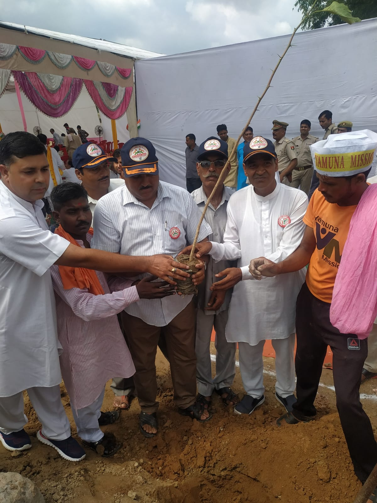
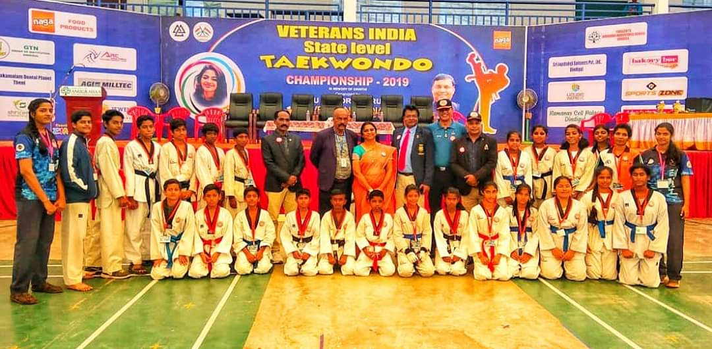
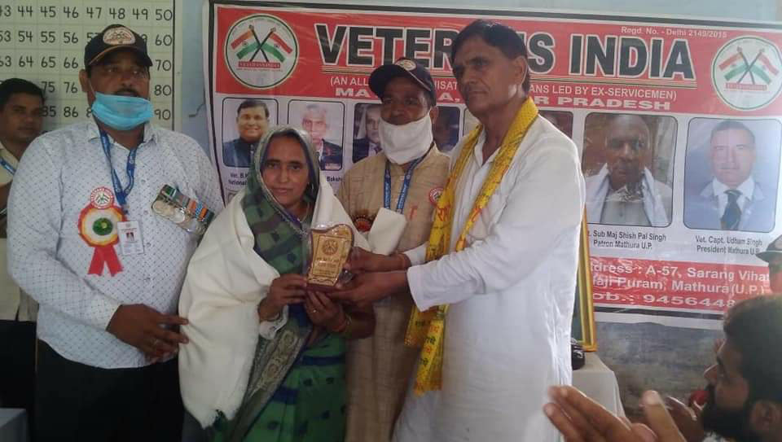

Our Objectives

Educational Initiatives
Workshops, debates, and civic education programs in schools and colleges to nurture democratic values among youth.

Public Awareness
Campaigns on political rights, responsibilities, voting awareness, and media literacy to encourage informed citizens.

Youth Engagement
Forums, discussions, and leadership development programs that empower youth to become active contributors in society.

Collaboration
Partnerships with NGOs, government institutions, and social organizations for impactful outreach programs nationwide.